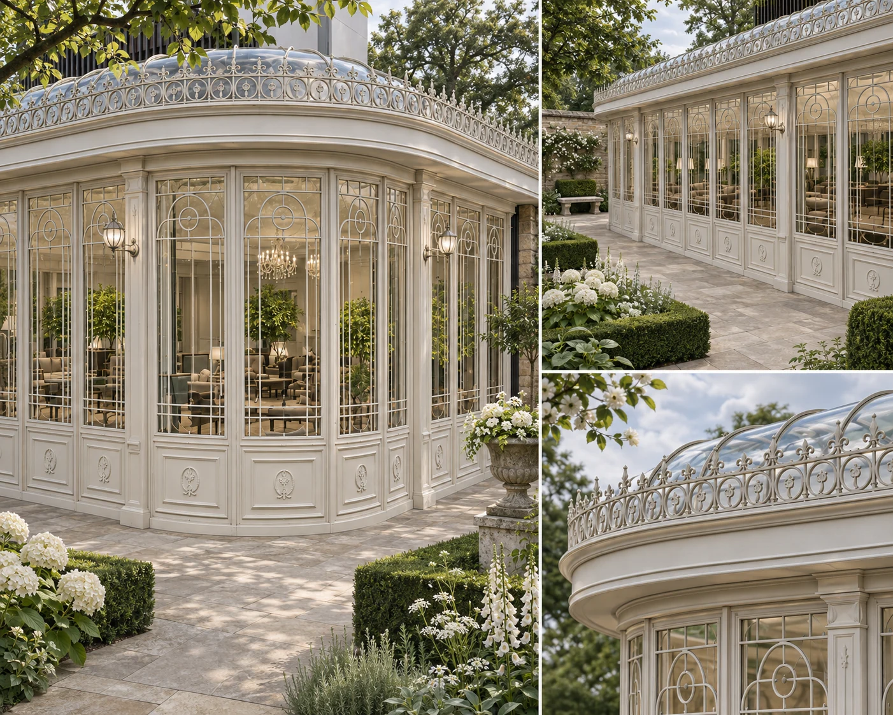
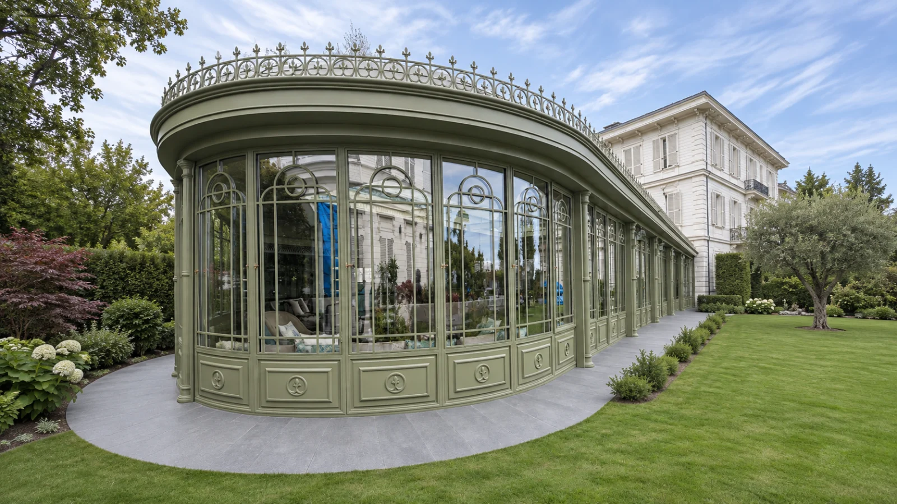

Curved steel conservatory · Garden gallery
The Green Crescent
The project
The Green Crescent
The Green Crescent is a long glazed gallery that follows a curving garden path. Twelve repeated bays run between two rounded ends, so the building is never seen all at once — it unfolds as you walk beside it.
Its sage-green steel frame, tall arched glazing and continuous cresting give it the presence of a classical orangery, while the curve keeps it light and connected to the lawn.
- Location
- Istanbul, Türkiye
- Completed
- 2023
- Setting
- Private residence garden
- Structure
- Long glazed garden gallery with rounded ends
- Frame
- Steel, painted sage green
- Roof
- Flat roof behind a deep cornice with ornamental cresting
- Glazing
- Tall glazed panels with arched heads above a panelled base
- Footprint
- Approx. 23.0 × 5.0 m, about 110 m² (indicative, from our design-record drawing)
- Stage
- Completed structure
- Made by
- Steelwork fabricated and installed by our partner ironwork atelier in Türkiye
Frame, roof and glazing
A flat roof sits behind a deep cornice, which keeps the outline crisp and lets the cresting run unbroken along the top edge. Below it, each bay holds a tall glazed panel with an arched head, set above a panelled base decorated with rosettes.
Because the frame is steel, the bays can be repeated at a steady 1.5-metre rhythm along the curve without bulky posts. The rounded ends turn the same detail through the curve, so the elevation reads as one continuous surface.
The Green Crescent in motion
Design and build
From drawing to finished structure
Our design-record drawing sets out the garden elevation, floor plan, end elevation and a section through the gallery, with the twelve-bay rhythm and overall length marked. It is the opening example in our design studio, where we explain how plan and elevation shape a long glazed building. The project film shows the cresting and glazing pattern up close.
Similar designs

Develop your project
FROM A REFERENCE.
TO YOUR OWN SPACE.
Explore classical conservatories or our bespoke steel and glass conservatories, compare the Curved-Bay Glazed Extension design, and see the Green Crescent drawings in the design studio.
Share the setting and the direction you are drawn to, and we will discuss your garden project.
Your next space
LET’S BEGIN
WITH YOUR IDEAS.
Share the setting, the way you want to use the space and the designs you are drawn to.
Plan your project